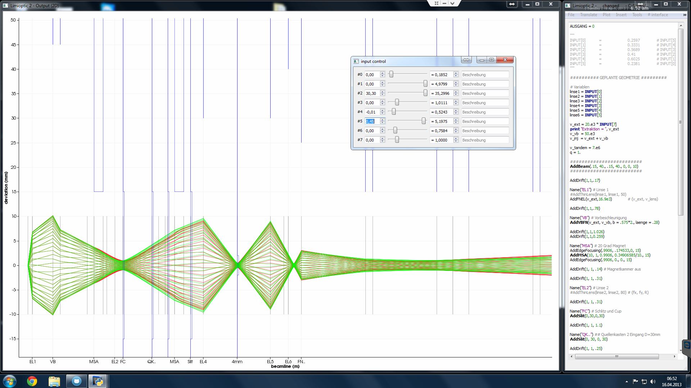
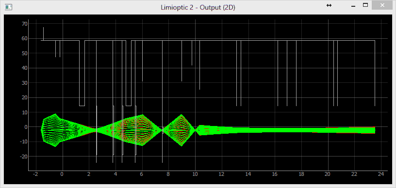
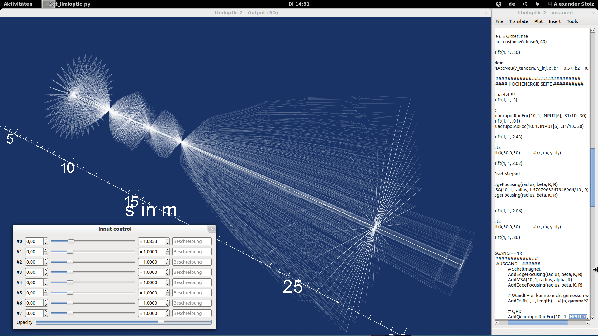

Limioptic 2



--> automatic optimization example
Installation
https://github.com/alexander-stolz/limiopticLicence
Documentation
A list of all currently available commands will be provided soon here on this page.
Simulationen
Trennung von Mangan und Chrom durch eine Folie an zwei unterschiedlichen Orten (Cologne AMS):


Das Cologne AMS HE-Massenspektrometer:

Vergleich mit FN HVE-Simulation (9MV, 50keV Injektion, keine Gitterlinse):

Die Vorlage von HVE ist leicht verzerrt, daher kommt es zu vermeintlichen kleinen Differenzen (Strahl A). Bis zum Stripping sind die Strahlengänge identisch! Ab dem Stripping kommt es zu einer plötzlichen Aufweitung des Strahls in der HVE-Simulation, was durch Stöße mit der Stripperfolie zu erklären ist.
Die Simulationsdatei: FN_9MV_NON_GRIDDED_50keV.lim
Vektorausgabe: Marker, Strahlen
Vergleich mit FN HVE-Simulation (4MV, 50keV Injektion, keine Gitterlinse):

Bis zum Stripping sind die Strahlengänge identisch! Ab dem Stripping kommt es zu einer plötzlichen Aufweitung des Strahls in der HVE-Simulation, was durch Stöße mit der Stripperfolie zu erklären ist.
Die Simulationsdatei: FN_4MV_NON_GRIDDED_50keV.lim
Vektorausgabe: Marker, Strahlen
Vergleich mit FN Vohl-Simulation (20keV Extraktion, 68.3keV Vorbeschleunigung, Quelle bis Target, Linsen aus):

Sehr gute Übereinstimmung zur Vohl-Simulation. Die Simulation wurde mit Messungen bestätigt.
Die Simulationsdatei: FN_VOHL_Src_to-Target_88.3keV.lim
Vektorausgabe: Marker, Strahlen
Vergleich mit FN Vohl-Simulation (20keV Extraktion, 58.3keV Vorbeschleunigung, Quelle bis Target, Linsen aus):

ACHTUNG: Vohl hat hier einen Fehler beim Ausgang des Injektors gemacht (Durchmesser statt Radius). Dieser Fehler wurde hier (erstes Bild) auch gemacht um den Vergleich zu ermöglichen. Die Simulation darunter ist ohne Fehler.
Die Simulationsdatei: FN_VOHL_Src_to-Target_78.3keV_wrong.lim

Die korrigierte Simulation.
Die Simulationsdatei: FN_VOHL_Src_to-Target_78.3keV.lim
Diplomarbeit
Download
Zuletzt aktualisiert: 10.05.2013